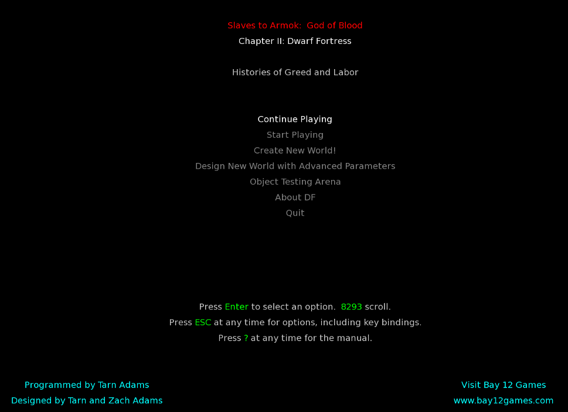
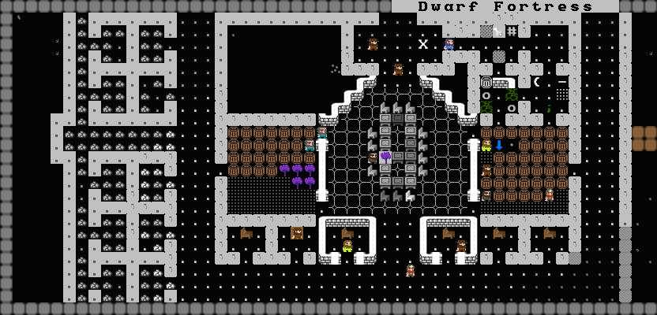
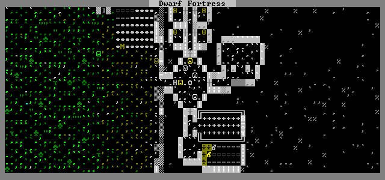
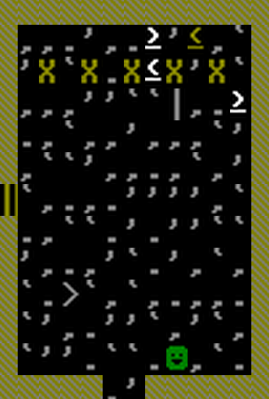
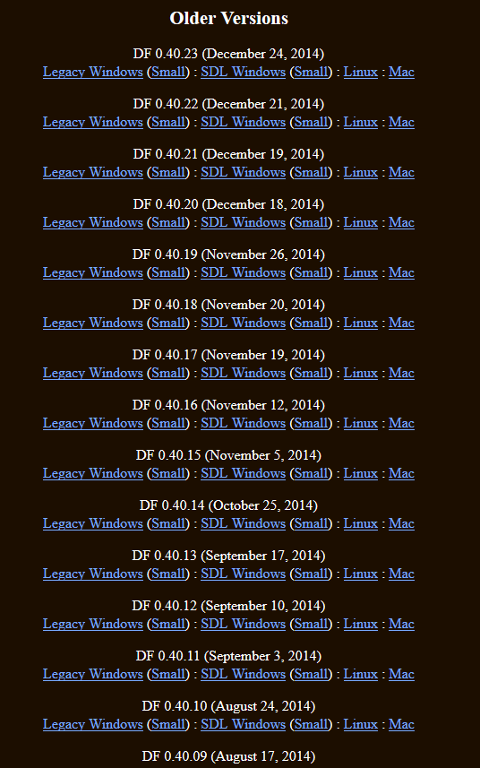

Ici, nous allons vous présenter le jeu.
Lors de notre présentation, nous essaierons de faire un tour d'horizon du jeu.
Nous essaierons de dégrossir le tout et vous donner envie de jouer à ce jeu qui mérite d'être connu.
Nous vous présenterons plusieurs point du jeu.
Ici, nous allons vous présenter le jeu.
Lors de notre présentation, nous essaierons de faire un tour d'horizon du jeu.
Nous essaierons de dégrossir le tout et vous donner envie de jouer à ce jeu qui mérite d'être connu.
Nous vous présenterons plusieurs point du jeu.
Si vous ne connaissez pas le jeu et que vous voulez en connaître plus sur celui-ci, vous êtes tombés sur la bonne page.

Un petit historique du jeu

Dwarf Fortress a été créé par Zach Adams sous le pseudo de ToadyOne et designé par Zach et Tarn Adams.
Le développement du jeu a été commencé en 2001 mais ce n'est qu'en 2006 que la première version fait son apparition.
Cette version 0.21.93.19a était pleine de bug a été trés vite suivie par d'autres versions corrigeant ces bugs.
Par la suite, ce jeu a été en constante évolution et les versions se sont succédée aux versions.
En 2008, sort la première version pour Mac (nous en sommes alors à la version 0.27.176.38b)
Un grand pas dans l'évolution du jeu se fera en 2010. En effet, après 1 ans et demi d'absence, une nouvelle version apparaît. Nous somme alors à la version 0.31.01.
Apportant son lot de nouveauté.
Plus récemment, nous sommes passé en 2014 à la version 0.40.01 et la version actuelle au moment où cet article est écrit est la version 0.40.23.
Et il est très fort possible que la version que vous verriez soit différente de celle que j'ai vu aujourd'hui.
Vous l'aurez compris, le jeu est toujours en développement et ce n'est pas prés de s'arrêter. L'auteur annonce que la version 1.0 ne devrait pas sortir avant 2025.
Mais que cela ne vous arrête pas à essayer de jouer au jeu car même si ce n'est pas la version finale, le jeu est déjà très riche et vaut la peine d'être vu.
Revenir en haut de la page

L'univers du jeu

Dwarf Fortress prend place dans un monde Heroic-Fantasy fort inspiré du Seigneur des Anneaux et d'autres livres/films du genre.
Ainsi le monde dans lequel sera placé l'histoire sera peuplé de nain, d'elfe, d'homme et de gobelins qui seront les grands peuple qui peupleront la terre.
Ils seront accompagnés par beaucoup d'autres monstres et menaces qui jalloneront vos aventures.
Vous pourrez ainsi retrouver des trolls, des titans et toute sortes d'animaux géant.
Le monde dans lequel vous serez propulsé ne sera pas uniforme et possédera pleins d'environnements différents.
Vous pourrez très bien passer votre temps dans des forêts ou traverser un désert, cela dans le mode aventure.
Même pour le mode forteresse, le terrain sera important car c'est ce qui permettra de savoir ce que vous pourrez réaliser.
Enfin, signalons, que vous ne saurez jamais quel danger vous affronterez ni quel objets vous trouverez/fabriquerez.
Revenir en haut de la page

Parlons un peu des graphismes du jeu.
Les graphismes du jeu sont très simplistes. En effet, le jeu se présente dans sa version originale en ASCII étendue.
Chaque symbole ASCII peuvent symboliser n'importe quoi. Tel symbole peut être un nain, ou un animal ou tout simplement une plante sur le chemin.
Ce choix de design laisse la part belle à l'imagination mais malheureusement rend le jeu moins attirant et plus hermétiques aux néophytes qui tenteraient de se lancer dans le jeu.
Notons quand même qu'il existe des mod capables de changer le graphisme du jeu et rendre le jeu plus compréhensible qu'il ne le serait sans ça.
Quoi que je ne crois pas qu'il y en ait déjà pour les versions les plus récentes étant donné le nombre de corrections qui sont apportées pour l'instant.
Revenir en haut de la page

Le gameplay

Le gameplay de Dwarf Fortress est selon moi le plus gros point fort du jeu.
Le jeu ne possède pas un mais plusieurs gameplay différent.
La façon dont vous jouerez dépendra du mode de jeu dans lequel vous êtes.
Dans DF, il existe 3 mode de jeu:
- Le mode Forteresse
- Le mode Aventure
- Le mode Légende
Le mode Forteresse
Le mode Forteresse sera la partie gestion du jeu.
Au départ, vous aurez 7 nains dont vous pourrez choisir les métiers. Attention, vous devrez choisir judicieusement car
vous aurez un nombre limité de point que vous devrez répartir entre les différents nains. Vous pourrez faire pareil avec tous les objets que vous emportez.
Ainsi vous pouvez décider de dépenser des points dans la nourriture ou dans l'apport de bétail.
Une fois le moment de préparation passé, vous arriverez dans la zone où vous aurez décidé de vous installer.
Le but sera de construire votre forteresse naine (d'où le titre du jeu) en donnant des ordres à vos nains.
Au fur et à mesure que vous avancerez dans le temps, de nouveaux nains s'ajouteront au 7 initiaux.
Vos actions seront variée. Vous pourrez creuser la roche à la recherche de matériaux mais aussi pour créer de nouvelle salle pour vos nains.
Vous pourrez bâtir des ateliers pour vos nains, cultiver des champs, créer votre propre armée lors des combats, ...
Dans les tutoriaux que vous trouverez ici, nous vous aideront à réaliser les tâches de base qui vous permettront de survivre un maximum d'année.
Le mode Aventure
Contrairement au mode forteresse où vous controlerez toute une ville de nain, dans ce mode, vous ne controlerez qu'un seul personnage.
Vous ne serez pas obligé de contrôler un aventurier nain mais pourrez controler aussi bien un homme qu'un elfe.
Avant de commencer, vous aurez, tout comme le mode forteresse, la possibilité de dépenser des points dans des capacités du héros.
Les points que vous pourrez dépenser dépendra du niveau de difficulté que vous aurez choisi. Il y en a trois:
Je conseille pour les débutant de choisir le mode demigod qui vous permettra de partir avec plus de points à dépenser et donc avoir des capacité meilleure.
Une fois le jeu commencé, vous serez libre de faire ce que vous voulez. C'est vous qui choisirez ce que vous voulez faire et qui construirez l'histoire autour du héros.
Des quêtes vous seront proposé par les pnj auxquel vous parlerez mais, encore une fois, c'est vous qui choisirez si vous voulez les faire ou pas.
Vous pourrez ainsi vivre des aventures héroïque où, ce qui est le plus probable pour les débutants, totalement foireuses.
Le mode Légende
Le mode Légende de Dwarf Fortress contient tout simplement tout les faits d'armes, tous les évènements de tous les personnages de Dwarf Fortress.
Il contient donc tout background de votre monde.
Il peut être intéressant de consulter les légendes du monde pour comprendre comment telle ou telle situation a pu se produire.
Nous espérons que la lecture de ces quelques lignes vous auront donné envie d'y jouer ou au moins de poursuivre la lecture des tutos.
Voilà, dans cette petite présentation du jeu, nous avons fait un petit tour d'horizon des différents modes de jeu de Dwarf Fortress.
Revenir en haut de la page Revenir au début de l'article

Le jeu est gratuit. Vous ne devez pas payer pour télécharger le jeu.
Le jeu est téléchargeable sur le site de l'éditeur.
Vous pouvez télécharger le jeu ici.
Il vous est même possibles de tester les anciennes versions ici.
Revenir en haut de la page